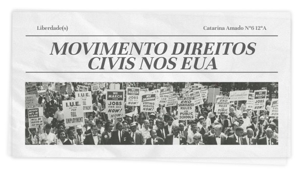
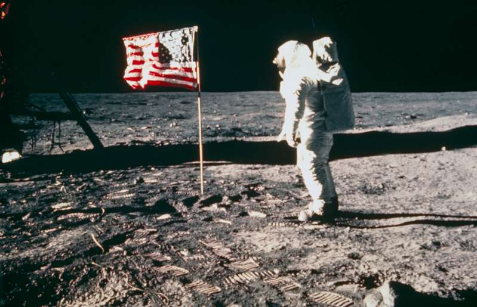

A guerra (1955-1975) entre o Vietnã do Norte (apoiado pela URSS e China) e o Vietnã do Sul (apoiado pelos EUA).
Computadores usados para processamento de dados e comunicação, como decodificação de mensagens e coordenação de ataques aéreos.
O conflito acelerou o desenvolvimento de novas tecnologias, como o GPS e câmeras digitais, inicialmente para fins militares.
Movimento dos Direitos Civis

Nos EUA, o movimento resultou em leis importantes como a Lei dos Direitos Civis de 1964 e a Lei dos Direitos de Voto de 1965.
Computadores ajudaram a organizar informações de ativistas e eventos, facilitando a coordenação dos esforços.
A diversidade crescente na indústria de tecnologia impulsionou novas inovações.
Corrida Espacial

A missão Apollo 11 (1969) pousou o primeiro homem na Lua, demonstrando o poder da computação avançada.
Computadores da terceira geração permitiram cálculos precisos e controle de sistemas complexos.
Avanços em circuitos integrados e sistemas de navegação digital foram impulsionados pela exploração espacial.
Avanços na Medicina
Desenvolvimento de vacinas e novos métodos de transplante de órgãos durante a década de 1960.
Computadores ajudaram em diagnósticos e no processamento de dados médicos.
Cultura e Sociedade
O movimento hippie, que promovia paz, amor e liberdade, atingiu seu auge no final dos anos 1960.
Embora o movimento fosse uma reação à industrialização, a disseminação das ideias hippies foi facilitada pela tecnologia, como o uso de computadores para impressão e distribuição de materiais.
Economia
Japão: O país experimentou rápido crescimento econômico, impulsionado por inovações tecnológicas e uma forte ética de trabalho.
América Latina: Diversos países enfrentaram crises econômicas e políticas durante a década de 1960, o que levou a instabilidade.
Computadores começaram a ser usados para melhorar a gestão econômica e auxiliar na formulação de políticas públicas.